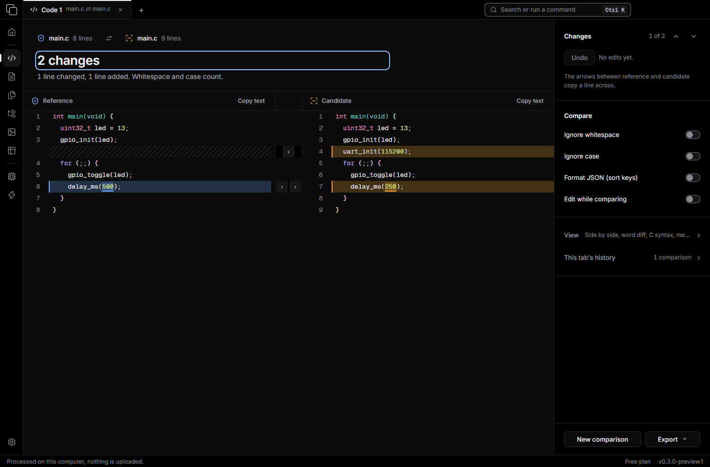
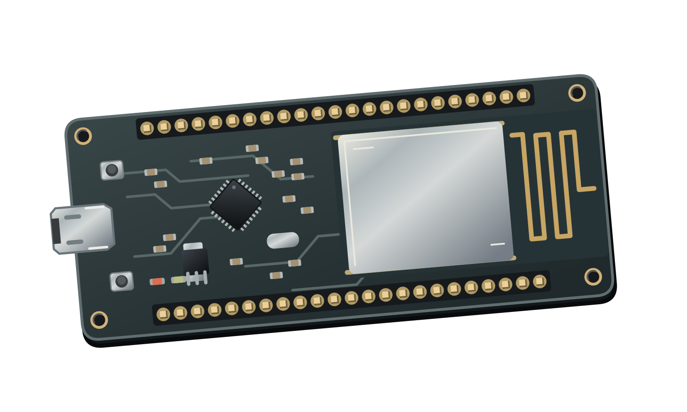
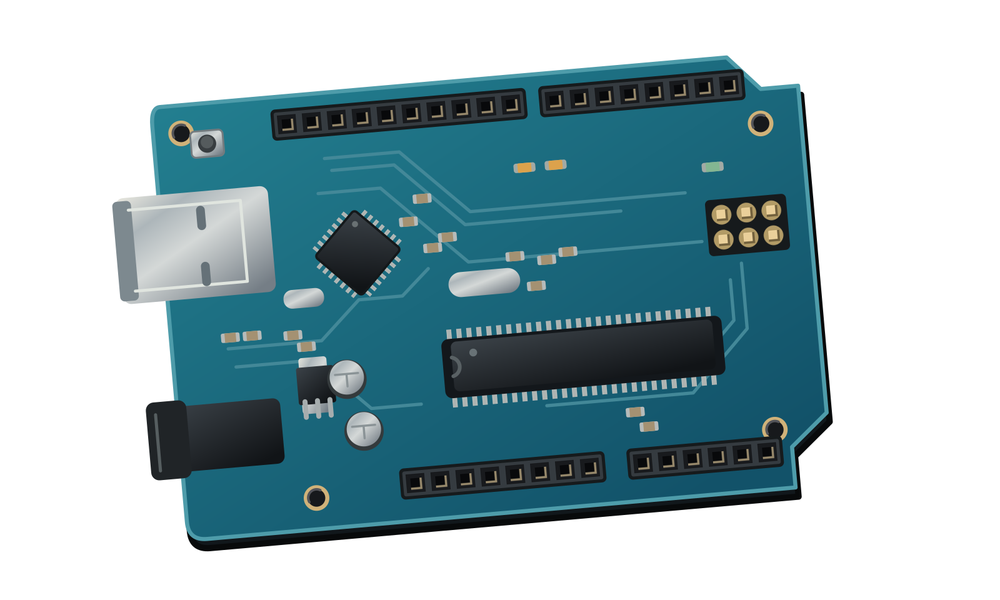
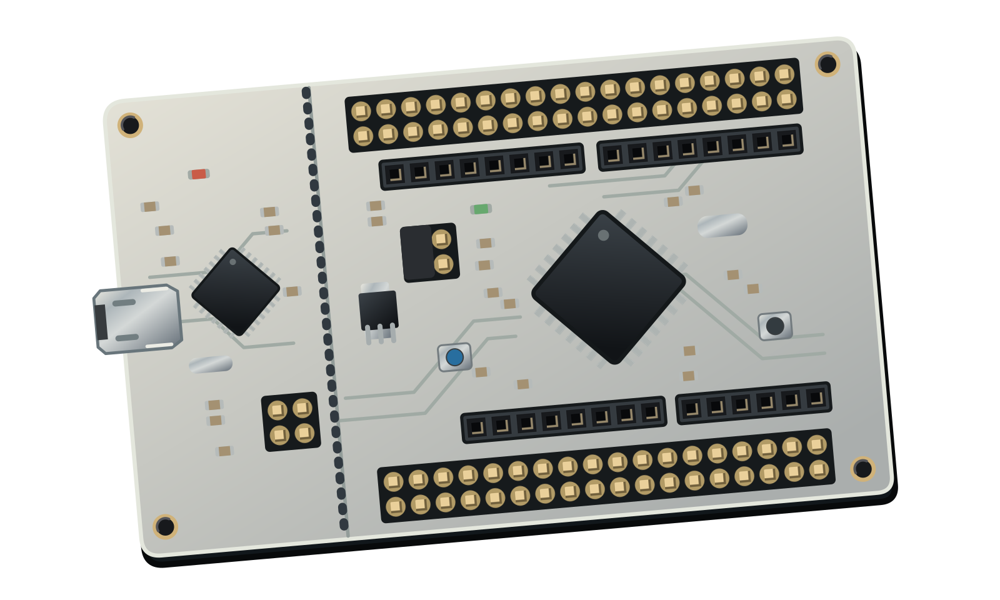
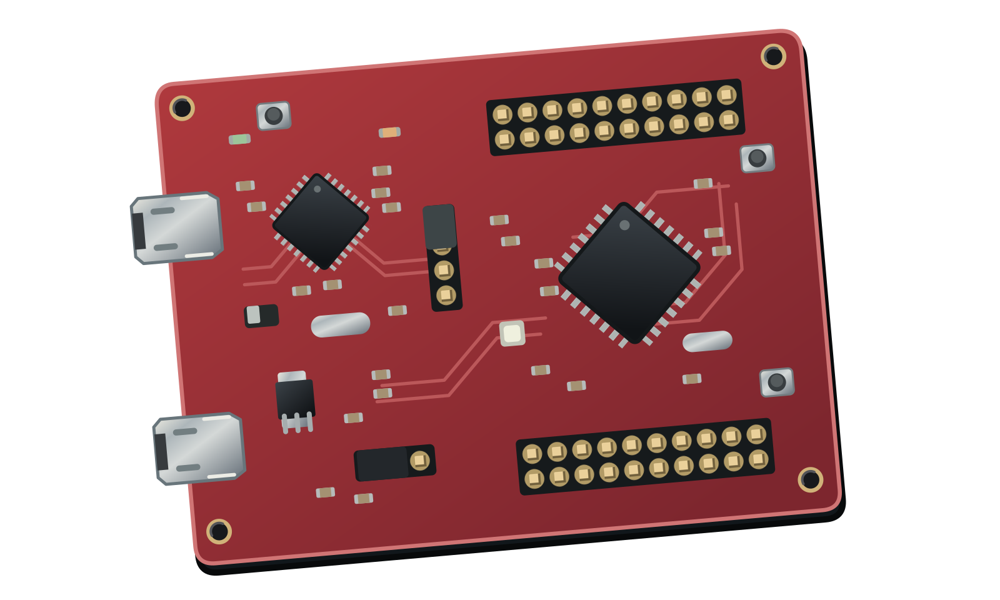

Yerelde karşılaştırın
İki derlemeyi veya dosyayı kendi bilgisayarınızda karşılaştırın.
Gömülü sistemler için
TwinDiff ile kodu, sinyalleri ve firmware’i masaüstünde karşılaştırın. Dosyalarınız bu bilgisayarda kalır.
Şu an Windows için. Linux (Ubuntu) ve macOS desteği geliyor.
Karşılaştırmayı keşfet
İki derlemeyi veya dosyayı kendi bilgisayarınızda karşılaştırın.
Yazmadan önce planı inceleyin. TwinDiff yedek alır ve yazdığını geri okuyarak doğrular.
TwinDiff’in kendi C derleyicisi k8cc, GCC’nin test setleriyle sınanır.
Neden? Firmware ekipleri iki derleme arasında tam olarak neyin değiştiğini ve çipte ne olduğunu bilmelidir.
Karşılaştırma görünümleri
Kod ve metin satırlarını karşılaştırın. İki klasörde hangi dosyaların değiştiğini görün.
İkili dosyaları, HEX dosyalarını ve firmware bellek görüntülerini karşılaştırın.
CSV ve XLSX dosyalarındaki veri serilerini toleranslarla karşılaştırın.
Bir referans görüntü ve bir aday görüntü açın. İkisini karşılaştırma görünümünde birlikte inceleyin.
İş akışı
Programlama varsayılan olarak kapalıdır. TwinDiff önce planı hazırlar ve bir onay kodu ister. Yazmadan önce yedek alır.
Önyükleyici alanı korunur. TwinDiff yazılan veriyi geri okuyarak doğrular. Hata durumunda işlemi durdurur.
Derleyici testleri
k8cc, TwinDiff’in C derleyicisidir. Sayılar, GCC'nin çalıştırma (torture) test setinde her hedefe uygulanan testlerden kaçını k8cc'nin geçtiğini gösterir (TwinDiff geliştirme sürümü, 19 Kasım 2026).
Donanım

FreeRTOS ve mbedtls kullanan bir ESP-IDF v6.1 uygulamasının 156 C dosyasını k8cc derledi. Kartta yazdırılan 11/11 test sonucu GCC derlemesiyle aynıydı.

Bir Arduino sketch'inin GCC derlemesi, TwinDiff'in yeni yükleme yoluyla (geliştirme dalı) karta yazıldı. Yükleme bayt bayt doğrulandı, kart beklenen çıktıyı yazdırdı.

k8cc ile derlenen örnek firmware, TwinDiff ile STM32F411 kartına yazıldı, doğrulandı ve çalıştı. Bir ESP32 kartında da örneğin k8cc ve GCC derlemeleri aynı sonucu verdi.

Programlama desteğiTwinDiff, TI'ın DSLite aracı üzerinden Tiva C (TM4C123) kartlarını programlamayı destekler.